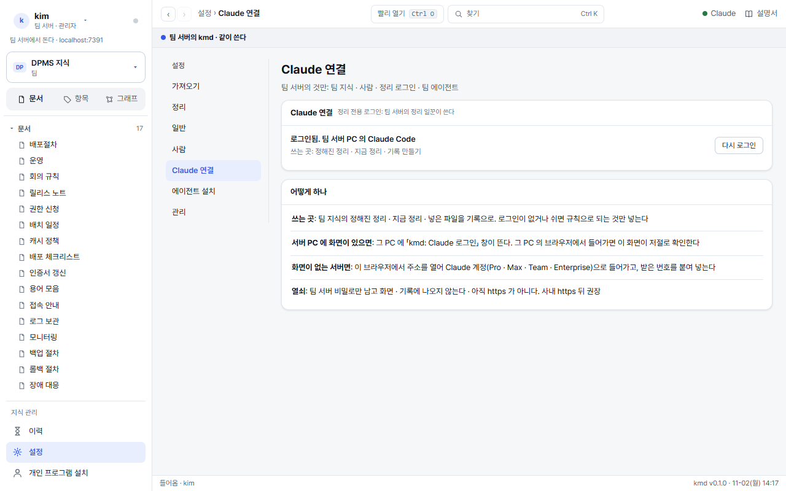
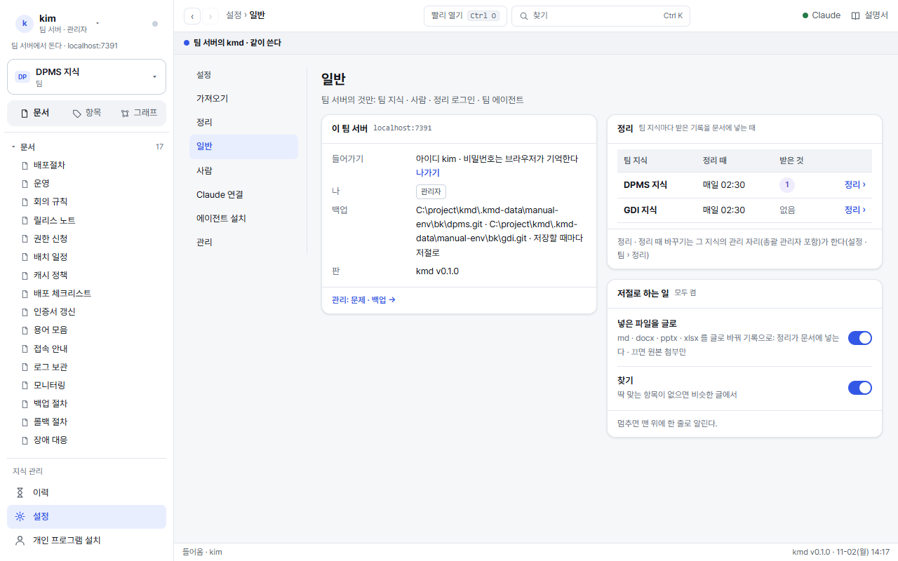

총괄 관리자
팀 서버(팀 프로그램)를 세우고, 사람 · 지식마다의 자리 · 백업 · 정리 전용 Claude 로그인을 돌본다. 지식 하나의 정리 · 가져오기 · 권한은 지식관리자 설명서, 밤 묶음 · 되살리기 · 새 판은 운영 설명서.
1팀 서버 세우기
tar -xzf kmd-<판>-team.tgz && cd kmd-<판>-team
sudo sh kmd-install.sh --team --url http://kmd.team.local --root /srv/kmd --port 8090 \
[--gitlab-group team --gitlab-api https://gitlab.team.local]- node 22 · git 이 있어야 한다. 코드는
/opt/kmd, 지식은/srv/kmd/<지식>/, 살림 자리는/srv/kmd/.kmd(명부 · 상태 · 비밀). - systemd 로 둘을 늘 켠다:
kmd.service(팀 서버) ·kmd-worker.service(정리 일꾼 · 열쇠는 root 만 읽는/etc/kmd/worker.env). - GitLab 열쇠는 숨김 입력으로만 받는다. 만들기 권한만 있는 봇 열쇠(지우기 · 보호 해제 없음). 지식마다 저장소를 만들어 백업 자리로 붙인다.
- 끝에 찍힌 첫 설정 주소를 브라우저로 열어 총괄 관리자 아이디 · 비밀번호를 정한다.
- 팀 꾸러미 안의 PC 꾸러미(
kmd-<판>-pc.zip)는 받기 자리/srv/kmd/.kmd/dl/에 놓인다(<팀 주소>/dl). 사람들의 설치 한 줄이 여기서 받아 간다. - 셸 명령
kmd(/usr/local/bin/kmd)도 둔다. 어느 사용자로 쳐도 kmd 사용자로 · 이 지식 폴더로 돈다.
2관리 화면: 문제 줄만

| 문제 줄 | 하는 것 |
|---|---|
| 비밀번호를 안 정한 사람 | 사람 카드 ⋯ › [새 링크](이 사람만 · 24시간 · 한 번). 떠난 사람이면 [떠남] |
| 잠김 | 여러 번 틀린 자리는 잠시 막힌다(맞는 사람은 그대로 쓴다). [풀기] |
| 관리자에게 부탁 | 쓰기 자리 사람이 더해 달라는 가져올 곳. [더하기] 또는 [거절](까닭과 함께 · 부탁한 사람의 이력에 남는다) |
| 자동 정리가 쉬고 있다 | 정리 전용 Claude 로그인이 끝났거나 한도. 아래 Claude 연결에서 다시 |
| 정리 일꾼이 일감을 받지 않는다 | 10분 넘게 받지 않으면 선다. systemctl status kmd-worker · 서버의 claude 로그인을 본다 |
| 백업이 앞섰다 · 갈라졌다 | [백업에서 받기](앞으로만) · [이 백업 이어 쓰기] · [서버 것으로 백업 덮기](운영) |
[풀기] · 새 링크 · 사람 더하기 · 떠남 · 백업 맞추기 · 주인 넘기기 · 팀 지식 지우기 · Claude 로그인 시작은 「비밀번호 한 번 더: 관리자 확인」 창 하나가 뜨고, 맞으면 하던 일을 이어서 한다(15분 안에는 다시 묻지 않는다).
3사람
 123
123- + 사람 더하기: 아이디 · 총괄 관리자 여부 · 지식마다 자리 표.
- 사람 카드: 상태(들어온다 · 링크 보냄 · 비밀번호를 안 정함) · 기기 · 「지식 n개에 자리」.
- ⋯: 새 링크 · 총괄 관리자로 · 기기 모두 끊기 · 떠남.
- 사람 더하기아이디(영문 · 숫자 · . _ -)와 지식마다 자리(없음 · 읽기 · 쓰기 · 지식관리자)를 고른다. 고르지 않은 지식은 없음이다.
- 처음 들어오기 링크를 보낸다24시간 · 한 번. 아이디와 함께 메신저로 그 사람에게만. 비밀번호는 그 사람이 정한다.
- 뒤에도 바꾼다사람 카드의 같은 표 · 또는 지식 카드 ⋯ › 권한. 묶음(개발 · 운영 …)으로 받은 자리는 따로 보인다.
사람이 떠날 때
⋯ 떠남 한 번이 다 한다. 들어가기 · 기기 · 예전 열쇠를 끊고 아이디는 남긴다(같은 아이디로 새 사람을 더하지 못한다). 그 사람이 주인인 지식은 내가 주인을 잇는다 또는 주인 칸을 비운다(뒤에 권한 창에서 넘긴다). 셸로는 kmd user off <아이디> [--to <받을 사람>].
4팀 지식 세우기 · 권한
- 팀 서버에는 팀 지식만 선다. 지식 목록 끝의 「+ 새 팀 지식」(총괄 관리자만). 세운 사람이 주인이고, 처음에는 주인 · 총괄 관리자에게만 보인다.
- 다른 곳에서 만든 지식 폴더를
/srv/kmd아래 통째로 놓고 지식 목록의 [동기화] 를 누르면 목록 맨 아래로 들어온다. - 팀 지식 지우기는 비밀번호 한 번 더 · 보관하지 않고 완전히 지운다(되살리기는 백업에서).
| 일 | 총괄 관리자 | 지식관리자 | 쓰기 | 읽기 |
|---|---|---|---|---|
| 보기 · 찾기 · Claude 로 읽기 | ✓ | ✓ | ✓ | ✓ |
| 기록 남기기 · 파일 넣기 · 가져오기 부탁 | ✓ | ✓ | ✓ | |
| 바로 고치기 · 정리 · 되돌리기 · 지식 설정 · 권한 주기 | ✓ | ✓ | ||
| 가져올 곳(허락된 호스트의 https git · DB) | ✓ | ✓ | ||
| 사람 · 묶음 · 지식 세우기/지우기/되살리기 · 주인 넘기기 | ✓ | |||
| 백업 · Claude 연결 · 일 줄 멈춤 · 동시에 도는 수 · 서버 폴더 · ssh 가져올 곳 | ✓ |
5Claude 연결: 정리 전용 로그인

- [로그인 시작]: 15분 안에 비밀번호를 넣지 않았으면 「비밀번호 한 번 더」 창이 먼저 뜬다.
- 화면 있는 서버(Windows · macOS · 화면 있는 Linux)면 그 PC 에 「kmd: Claude 로그인」 창이 뜬다. 거기서 로그인하면 관리 화면이 몇 초마다 저절로 확인한다.
- 화면 없는 서버(헤드리스 Linux)면 로그인 주소가 화면에 나온다. 그 주소를 열어 받은 번호를 붙여 넣는다(한 번용 · 저장하지 않는다). 가짜 터미널을 못 다는 서버는
kmd secret set claude-token. - 「로그인됨 · 정리 전용」이 보이면 끝이다.
정리 일꾼은 설치가 함께 늘 켠다. 서버에 claude(Claude Code)가 깔려 있어야 한다. 일꾼이 쉬는 동안(로그인 끝 · 한도)과 「자동 정리에 Claude 쓰지 않는」 지식은 서버가 규칙으로 넣는다. 맡은 일감은 40분 안에 끝나지 않으면 다시 기다림으로, 세 번이면 「정리하지 못했다」.
6일반 설정 · 백업 자리

- 팀 지식의 백업: GitLab 봇(
serve.json의gitlab)이 저절로 붙이거나kmd backup add <지식> <주소>(backupRoots안의 폴더 · https · ssh). - 저장 뒤 바로 보내고, 안 되면 1 · 5 · 15 · 60분 · 매일 다시. 6시간 밀리면 노랑 · 24시간이면 빨강 한 줄.
- 개인 지식의 백업은 그 사람의 개인 프로그램이 한다.
7셸 명령
팀 서버에서 그냥 kmd … 로 친다. /usr/local/bin/kmd 가 kmd 사용자로 · --root /srv/kmd 를 붙여 돌린다(root 로 바로 node …/kmd.mjs 를 돌리지 않는다. 살림 자리 파일이 root 것이 되어 서버가 읽지 못한다). 전체 목록은 kmd help.
| 명령 | 하는 것 |
|---|---|
kmd user | 사람 목록: 총괄 관리자 · 비밀번호를 정했나 · 기기 수 · 떠남 |
kmd user add <아이디> [--admin] [--url <팀 주소>] | 사람 더하기: 처음 들어오기 링크를 찍는다 · 자리는 화면의 사람 카드에서 |
kmd user reset <아이디> | 비밀번호 다시 정하기 링크(마지막 총괄 관리자가 잊었을 때도) |
kmd user off <아이디> [--to <받을 사람>] | 떠남: 들어가기 · 기기를 끊고 아이디를 남긴다 |
kmd owner <지식> [사람] [--curators 가,나] | 지식의 주인 · 지식관리자 |
kmd access <지식> [--all 자리] [--user 아이디=자리 …] | 지식마다 자리를 셸로 |
kmd group [add <묶음> <아이디,…> | rm <묶음>] | 묶음 만들기 · 지우기 · 사람 넣고 빼기 |
kmd worker add | 정리 일꾼 열쇠 만들기(한 번만 보인다) |
kmd worker <팀 주소> | 정리 일꾼: 늘 돈다(이 OS 사용자의 Claude Code 로그인으로) |
kmd backup [add <지식> <주소> | pull <지식>] | 백업 상태 · 백업 자리 붙이기 · 백업에서 받기(앞으로만) |
kmd secret set <이름> | 비밀 넣기(gitlab · 원천 git 자격 · claude-token): 숨김 입력 |
kmd machine add <지식> <원천> | 바깥 생성기용 기계 열쇠(그 지식 · 그 표만 · 1년) |
kmd guard <지식> | --all | 지식 점검: 이름 없는 기록 · 장부 밖 이름 · 깨진 머리 수 |
kmd search-check <지식> | 찾기 점검: 얼린 시험지 위에서 나빠진 문항 |
kmd restore <백업 주소> [이름] [--practice | --attach] | 지식 되살리기(운영) |
kmd auth reapply <auth.log> | 옛 명부로 되살린 뒤 늦은 일 다시 적용 |